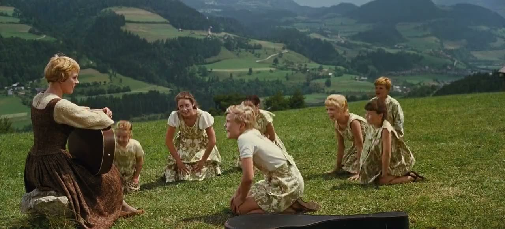
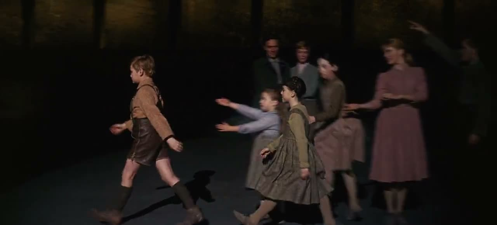
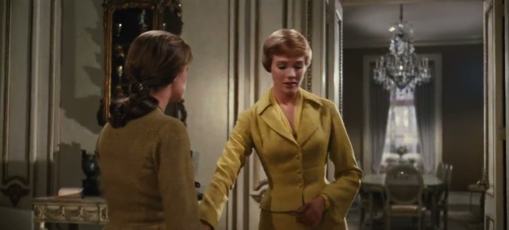
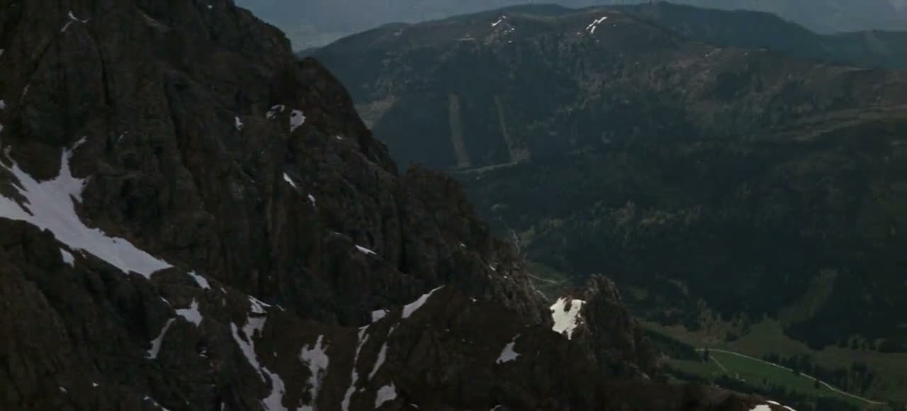

Rodgers & Hammerstein’s beloved classic. A high-spirited postulant leaves the convent to become a governess for the seven children of Captain von Trapp — and wins them over with music, mountains and a heart that refuses to be quieted. Songs the whole world knows: Do-Re-Mi, My Favorite Things, Climb Ev’ry Mountain, Edelweiss.
Julie Andrews · Christopher Plummer · Eleanor Parker · Richard Haydn
Directed by Robert Wise · Screenplay by Ernest Lehman · Filmed in Todd-AO
index.html?v=https://example.com/your-video.mp4